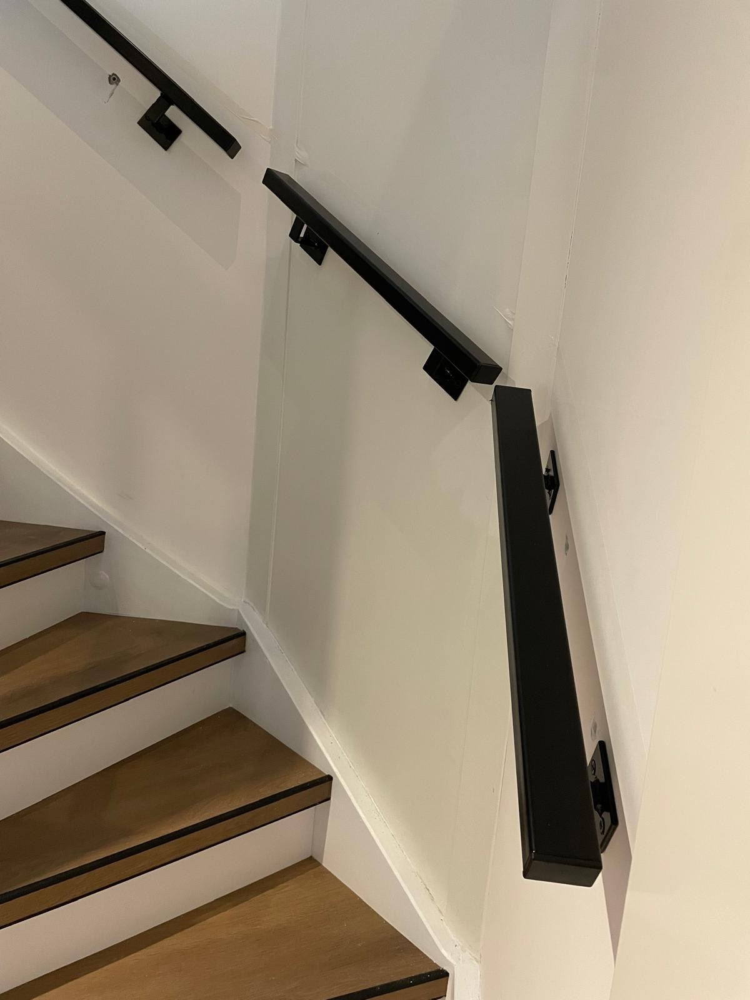

Valier · Wandleuning op maat
De leuning.
Niets meer.
Massief staal, vierkant profiel, gemaakt op de maat van uw trap.
01 · Profiel
Vierkant.
Strak.
Een kokerprofiel met zacht afgeronde hoeken. Prettig in de hand en rustig voor het oog.
02 · Bevestiging
Gedragen
door staal.
Vierkante wandplaten en massieve houders, stevig verankerd in de muur. Ze zijn net zo strak vormgegeven als de leuning zelf.
03 · Elke trap
Om elke
hoek.
Kwartslag, dubbele kwartslag of wenteltrap: wij maken de leuning in delen die precies de lijn van uw trap volgen.
04 · Afwerking
Uw kleur.
Gepoedercoat en slijtvast. Mat zwart is onze klassieker.
Projecten
Geplaatst.
Niet gerenderd.
Hierboven ziet u de leuning in 3D. Hieronder hangt hij aan de muur bij onze klanten.
Op maat
Geen standaardlengtes. Elke leuning wordt gemaakt op de maten van uw trap.
Om elke hoek
In één stuk of in delen. Ook voor kwartslag-, dubbele kwartslag- en wenteltrappen.
Strak gemonteerd
Wij plaatsen de leuning zelf, recht, stevig en netjes afgewerkt.
Werkwijze
In drie stappen
een nieuwe leuning.
- 01
Stuur een foto
Stuur een paar foto's van uw trap, of plan een afspraak om in te meten. U ontvangt een prijs op maat.
- 02
Op maat gemaakt
Wij maken uw leuning en houders op de exacte maat, in de afwerking van uw keuze.
- 03
Montage
Wij monteren de leuning bij u thuis en laten alles netjes achter.

Specificaties
Het product.
- Profiel
- Vierkant, 40 × 40 mm
- Materiaal
- Staal
- Afwerking
- Poedercoating: mat zwart, goud, antraciet, wit
- Bevestiging
- Vierkante wandhouders
- Vorm
- Recht, of in delen voor kwartslag- en wenteltrappen
- Montage
- Door Valier, bij u thuis
Vragen
Goed om te weten.
Past een Valier-leuning op mijn trap?
Ja. Elke leuning wordt op maat gemaakt. Rechte trap, kwartslag, dubbele kwartslag of wenteltrap: we volgen de lijn van uw trap, in één stuk of in delen.
Wat kost een leuning?
Dat hangt af van de lengte, de vorm van uw trap en de afwerking. Stuur ons een paar foto's en u ontvangt een prijs op maat.
Hoe wordt er gemeten?
U kunt zelf foto's en maten sturen, of we plannen een afspraak om de trap in te meten.
Op wat voor muur kan de leuning?
De leuning wordt met wandhouders in de muur verankerd. Per wand kiezen we de juiste bevestiging.
Welke kleuren zijn er?
Mat zwart is onze klassieker. Daarnaast goud, antraciet en wit. Heeft u een andere kleur in gedachten? Vraag het ons.
Hoe lang duurt het?
De levertijd hoort u bij uw prijsopgave. De montage zelf is snel en netjes.
Prijs op maat
Uw trap.
Uw leuning.
Drie korte vragen. Wij nemen persoonlijk contact met u op.